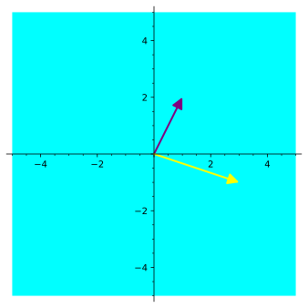

Determine if a subset of \(\IR^n\) is a subspace or not.
Subsection2.3.1Warm Up
Activity2.3.1.
Consider the linear equation
\begin{equation*}
x+2y+z=0.
\end{equation*}
(a)
Verify that both \(\vec{v}=\left[\begin{array}{c}1\\-1\\1\end{array}\right]\) and \(\vec{w}=\left[\begin{array}{c}1\\0\\-1\end{array}\right]\) are solutions.
(b)
Is the vector \(2\vec{v}-3\vec{w}\) also a solution?
Subsection2.3.2Class Activities
Observation2.3.2.
Recall that if \(S=\left\{\vec{v}_1,\dots, \vec{v}_n\right\}\) is subset of vectors in \(\IR^n\text{,}\) then \(\vspan(S)\) is the set of all linear combinations of vectors in \(S\text{.}\) In EV2 (Section 2.2), we learned how to decide whether \(\vspan(S)\) was equal to all of \(\IR^n\) or something strictly smaller.
Activity2.3.3.
Let’s consider the relationship between vectors within a spanning set.
(a)
Let \(S\) denote a set of vectors in \(\IR^3\) and suppose that \(\left[\begin{array}{c}1\\2\\3\end{array}\right],
\left[\begin{array}{c}4\\5\\6\end{array}\right]\in\vspan(S)\text{.}\) Which of the following vectors might not belong to \(\vspan(S)\text{?}\)
More generally, let \(S\) denote a set of vectors in \(\IR^n\) and suppose that \(\vec v,\vec w\in\vspan(S)\) and \(c\in\mathbb R\text{.}\) Which of the following vectors must belong to \(\vspan(S)\text{?}\)
\(\displaystyle \vec 0\)
\(\displaystyle \vec v+\vec w\)
\(\displaystyle c\vec v\)
All of these
Definition2.3.4.
A homogeneous system of linear equations is one of the form:
Yes, it is guaranteed to have at least one solution.
More information is required.
(b)
Suppose that \(\left[\begin{array}{c} 1 \\ 2 \\ 3 \end{array}\right] \) and \(\left[\begin{array}{c} 4 \\ 5 \\ 6 \end{array}\right] \) are both solutions to the homogeneous vector equation \(x_1\vec{v}_1+x_2\vec{v}_2+x_3\vec{v}_3=\vec{0}\text{.}\) This means that
we may conclude that the vector \(\left[\begin{array}{c} 1+4 \\ 2+5 \\ 3+6 \end{array}\right] \) is...
another solution.
not a solution.
is equal to \(\vec{0}\text{.}\)
(c)
More generally, if \(\left[\begin{array}{c} a_1 \\ \vdots \\ a_n \end{array}\right] \) and \(\left[\begin{array}{c} b_1 \\ \vdots \\ b_n \end{array}\right] \) are both solutions to \(x_1 \vec{v}_1 + \cdots+x_n \vec{v}_n = \vec{0}\text{,}\) we know that
Thus we may conclude that the vector \(\left[\begin{array}{c} ca_1 \\ \vdots \\ ca_n \end{array}\right] \) is...
another solution.
not a solution.
is equal to \(\vec{0}\text{.}\)
Observation2.3.6.
If \(S\) is any set of vectors in \(\IR^n\text{,}\) then the set \(\vspan(S)\) has the following properties:
the set \(\vspan(S)\) is non-empty.
the set \(\vspan(S)\) is “closed under addition”: for any \(\vec{u},\vec{v}\in \vspan(S)\text{,}\) the sum \(\vec{u}+\vec{v}\) is also in \(\vspan(S)\text{.}\)
the set \(\vspan(S)\) is “closed under scalar multiplication”: for any \(\vec{u}\in\vspan(S)\) and scalar \(c\in\IR\text{,}\) the product \(c\vec{u}\) is also in \(\vspan(S)\text{.}\)
Likewise, if \(W\) is the solution set to a homogenous vector equation, it too satisfies:
the set \(W\) is non-empty.
the set \(W\) is “closed under addition”: for any \(\vec{u},\vec{v}\in W\text{,}\) the sum \(\vec{u}+\vec{v}\) is also in \(W\text{.}\)
the set \(W\) is “closed under scalar multiplication” : for any \(\vec{u}\in W\) and scalar \(c\in\IR\text{,}\) the product \(c\vec{u}\) is also in \(W\text{.}\)
Definition2.3.7.
A subset \(W\) of a vector space is called a subspace provided that it satisfies the following properties:
the subset is non-empty.
the subset is closed under addition: for any \(\vec{u},\vec{v} \in W\text{,}\) the sum \(\vec{u}+\vec{v}\) is also in \(W\text{.}\)
the subset is closed under scalar multiplication: for any \(\vec{u} \in W\) and scalar \(c \in \IR\text{,}\) the product \(c\vec{u}\) is also in \(W\text{.}\)
Observation2.3.8.
Note the similarities between a planar subspace spanned by two non-colinear vectors in \(\IR^3\text{,}\) and the Euclidean plane \(\IR^2\text{.}\) While they are not the same thing (and shouldn’t be referred to interchangeably), algebraists call such similar spaces isomorphic; we’ll learn what this means more carefully in a later chapter.
A planar subset of \(\IR^3\text{.}\)

The plane \(\IR^2\) itself.
Figure11.A planar subset of \(\IR^3\) compared with the plane \(\IR^2\text{.}\)
Activity2.3.9.
To show that sets of Euclidean vectors form subspaces, we will need to prove that certain equalities hold.
(a)
Consider the following argument that \(5=7\text{:}\)
This is instead a proof that \(\mathrm{SAME}=\mathrm{SAME}\text{,}\) assuming that \(\mathrm{LEFT} = \mathrm{RIGHT}\) is true in the first place. But the fact that \(\mathrm{SAME}=\mathrm{SAME}\) doesn’t need a proof, and this work fails to guarantee that \(\mathrm{LEFT} = \mathrm{RIGHT}\) will be true, as we saw in Activity 2.3.9.
Activity2.3.12.
Let \(W=\setBuilder{\left[\begin{array}{c} x \\ y \\ z \end{array}\right]}{ x+2y+z=0}\text{.}\) Consider the following questions to prove that \(W\) is a subspace.
(a)
Is \(W\) non-empty?
Yes.
No.
(b)
Let’s assume that \(\vec{u}=\left[\begin{array}{c} x \\ y \\ z \end{array}\right]\) and \(\vec{v} = \left[\begin{array}{c} a \\ b \\ c \end{array}\right] \) are in \(W\text{.}\) What equations are we assuming to be true?
\(x+2y+z=0\text{.}\)
\(a+2b+c=0\text{.}\)
Both of these.
Neither of these.
(c)
Which equation must be verified to show that \(\vec u+\vec v = \left[\begin{array}{c} x+a \\ y+b \\ z+c \end{array}\right]\) also belongs to \(W\text{?}\)
\((x+a)+2(y+b)+(z+c)=0\text{.}\)
\(x+a+2y+b+z+c=0\text{.}\)
\(x+2y+z=a+2b+c\text{.}\)
(d)
Use your assumptions to complete the following proof of \((x+a)+2(y+b)+(z+c)=0\text{.}\)
Have we proven \(W\) is a subspace of \(\IR^3\text{?}\)
Yes
Not yet
(f)
Assume that \(\vec u= \left[\begin{array}{c} x \\ y \\ z \end{array}\right]\) belongs to \(W\text{,}\) and \(c\in\mathbb R\text{.}\) Which equation must be verified to show that \(c\vec u= \left[\begin{array}{c} cx \\ cy \\ cz \end{array}\right]\) also belongs to \(W\text{?}\)
\((cx)+2(cy)+(cz)=0\text{.}\)
\(x+2y+z=c\text{.}\)
\(x+2y+z+c=0\text{.}\)
(g)
Complete the following proof of \((cx)+2(cy)+(cz)=0\) from the assumption \(x+2y+z=0\text{.}\)
Show \(R\) isn’t a subspace by showing that \(\vec 0\not\in R\text{.}\)
(b)
Show \(S\) isn’t a subspace by finding two vectors \(\vec u,\vec v\in S\) such that \(\vec u+\vec v\not\in S\text{.}\)
(c)
Show \(T\) isn’t a subspace by finding a vector \(\vec v\in T\) such that \(2\vec v\not\in T\text{.}\)
Activity2.3.16.
Consider the following two sets of Euclidean vectors:
\begin{equation*}
U=\left\{ \left[\begin{array}{c} x \\ y \end{array}\right] \middle|\,7 \, x + 4 \, y = 0\right\} \hspace{2em} W=\left\{ \left[\begin{array}{c} x \\ y \end{array}\right] \middle|\,3 \, x y^{2} = 0\right\}
\end{equation*}
Explain why one of these sets is a subspace of \(\mathbb{R}^2\) and one is not.
Activity2.3.17.
(a)
Consider the following attempted proof that
\begin{equation*}
U=\left\{ \left[\begin{array}{c} x \\ y \end{array}\right] \middle| x+y=xy\right\}
\end{equation*}
is closed under scalar multiplication.
Let \(\left[\begin{array}{c} x \\ y \end{array}\right]\in U\text{,}\) so we know that \(x+y=xy\text{.}\) We want to show \(k\left[\begin{array}{c} x \\ y \end{array}\right]=\left[\begin{array}{c} kx \\ ky \end{array}\right]\in U\text{,}\) that is, \((kx)+(ky)=(kx)(ky)\text{.}\) This is verified by the following calculation:
Recall that in Activity 2.2.1 we used the words vector, linear combination, and span to make an analogy with recipes, ingredients, and meals. In this analogy, a recipe was defined to be a list of amounts of each ingredient to build a particular meal.
Activity2.3.19.
(a)
Given the set of ingredients \(S=\{\textrm{flour}, \textrm{yeast}, \textrm{salt}, \textrm{water}, \textrm{sugar}, \textrm{milk}\}\text{,}\) how should we think of the subspace \(\vspan(S)\text{?}\)
(b)
What is one meal that lives in the subspace \(\vspan(S)\text{?}\)
(c)
What is one meal that does not live in the subspace \(\vspan(S)\text{?}\)
The set \(W\) is a subspace. Below are two attempted proofs of the fact that \(W\) is closed under vector addition. Both of them are invalid; explain why.
(a)
Let \(\vec{u}=\left[\begin{array}{c}1\\4\\1\\1\end{array}\right],\vec{v}=\left[\begin{array}{c}2\\-1\\1\\-1\end{array}\right].\) Then both \(\vec{u},\vec{v}\) are elements of \(W\text{.}\) Their sum is
it follows that \(\vec{w}\) is also in \(W\) and so \(W\) is closed under vector addition.
(b)
If \(\left[\begin{array}{c}x\\y\\z\\w\end{array}\right],\left[\begin{array}{c}a\\b\\c\\d\end{array}\right]\) are in \(W\text{,}\) we need to show that \(\left[\begin{array}{c}x+a\\y+b\\z+c\\w+d\end{array}\right]\) is also in W. To be in \(W\text{,}\) we need
by moving everything over to the left hand side. Since we are assuming that \(x+y-3z-2w=0\) and \(a+b-3c-2d=0\text{,}\) it follows that \(0=0\text{,}\) which is true, which proves that vector addition is closed.
Subsection2.3.4Videos
Figure12.Video: Showing that a subset of a vector space is a subspaceFigure13.Video: Showing that a subset of a vector space is not a subspace
A square matrix \(M\) is symmetric if, for each index \(i,j\text{,}\) the entries \(m_{ij} = m_{ji}\text{.}\) That is, the matrix is itself when reflected over the diagonal from upper left to lower right. Prove that the set of \(n \times n\) symmetric matrices is a subspace of \(M_{n \times n}\text{.}\)
Exploration2.3.22.
The space of all real-valued function of one real variable is a vector space. First, define \(\oplus\) and \(\odot\) for this vector space. Check that you have closure (both kinds!) and show what the zero vector is under your chosen addition. Decide if each of the following is a subspace. If so, prove it. If not, provide the counterexample.
The set of even functions, \(\{f:\mathbb{R} \rightarrow \mathbb{R}: f(-x) = f(x) \mbox{ for all } x\}\text{.}\)
The set of odd functions, \(\{f:\mathbb{R} \rightarrow \mathbb{R}: f(-x) = -f(x) \mbox{ for all } x\}\text{.}\)
Exploration2.3.23.
Give an example of each of these, or explain why it’s not possible that such a thing would exist.
A nonempty subset of \(M_{2 \times 2}\) that is not a subspace.
A set of two vectors in \(\mathbb{R}^2\) that is not a spanning set.
Exploration2.3.24.
Let \(V\) be a vector space and \(S = \{\vec{v}_1,\vec{v}_2,\ldots,\vec{v}_n\}\) a subset of \(V\text{.}\) Show that the span of \(S\) is a subspace. Is it possible that there is a subset of \(V\) containing fewer vectors than \(S\text{,}\) but whose span contains all of the vectors in the span of \(S\text{?}\)